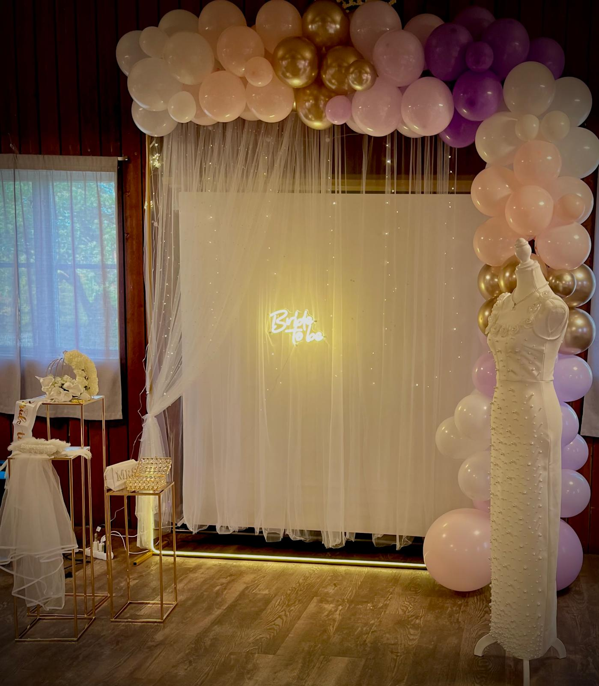
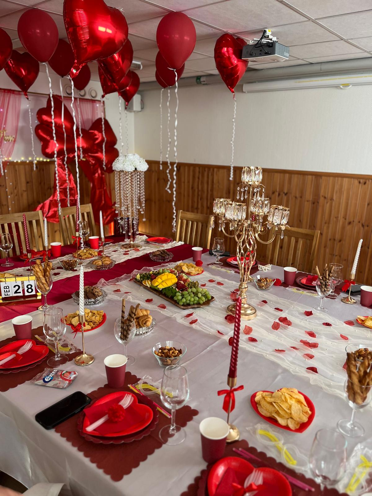
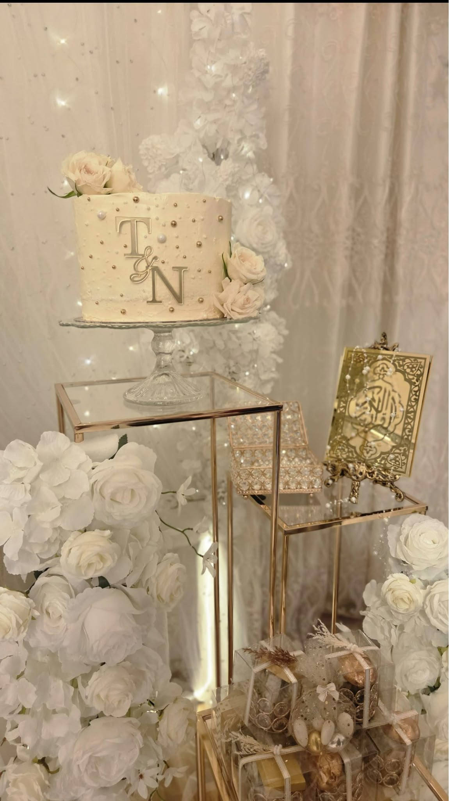

Om mina hobbyer
Nu kommer jag att berätta om mina hobbyer. När jag var yngre hade jag många olika hobbyer och drömmar. Med tiden har mina intressen förändrats, men jag har fortfarande flera saker som jag tycker om att göra på min fritid. En av mina största hobbyer är att dekorera och fixa inför fester och olika tillställningar. Jag tycker om att vara kreativ och skapa en fin och mysig stämning. Jag gillar också att designa kläder och fotografera, eftersom jag tycker att det är roligt att skapa något själv och se resultatet av det jag har gjort.
På min fritid tycker jag även om att göra presenter till fester och skapa speciella detaljer till olika tillställningar. Jag tycker om att göra dessa presenter eftersom de blir som fina minnen från stunder vi har delat. Ett annat intresse som har blivit viktigare för mig är programmering och teknik. Jag vill lära mig mer inom det området och utveckla mina kunskaper, eftersom jag tycker att det är spännande att kunna skapa och bygga saker med hjälp av teknik.
Efter att jag har arbetat med HTML och Visual Studio Code kände jag att det var riktigt roligt och spännande. Därför tror jag att programmering med tiden kan bli en av mina hobbyer. Jag vill fortsätta träna och utveckla mina kunskaper så mycket som möjligt. I framtiden skulle jag vilja skapa en webbplats som kan vara användbar för andra människor.
Bilder från mina intressen



Fakta om mina hobbyer
| Hobby | Vad jag gör | Varför jag gillar det | Hur ofta |
|---|---|---|---|
| Dekoration | Dekorerar fester och tillställningar | Jag tycker om att vara kreativ | Vid olika tillfällen |
| Design | Designar kläder och olika detaljer | Jag tycker om att skapa egna idéer | På fritiden |
| Programmering | Lär mig att skapa webbplatser | Jag tycker om teknik och utveckling | Flera gånger i veckan |
Mer information
Jag är också intresserad av webbutveckling. Du kan läsa mer om webbutveckling på MDN Web Docs.